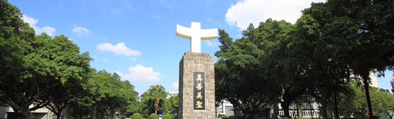

天主教輔仁大學
天主教輔仁大學（英語譯名：Fu Jen Catholic University[a]），通稱輔仁大學、輔大（FJCU、FJU），是中華民國一所天主教大學，始於1925年本篤會在北平建校，1961年由聖言會、耶穌會與天主教會臺灣地區主教團在臺北復校，2013年統合學校法人至今。現設有12個學院、附設醫院及若干博物館、圖書館與研究院，是臺灣主要綜合大學之一。
輔大直屬宗座督導（由臺北總主教兼任），享有高度國際性，擁有全臺最初AACSB認證、A&HCI期刊[33][34]與知名國際體育校隊。現為UMAP國家秘書處暨亞洲博雅大學聯盟、EUTW七校聯盟、清華五校聯盟等創始成員，教育部教卓計畫、深耕計畫固定入選校。交協表列台灣7大名門大學之一。
輔大在QS、THE、U.S.News三榜綜合排名全臺前10%，論文被引數全臺第7、宗教神學全台第1。跨國碩士課程獲金融時報評為世界第19、全臺第1及世界報評比西班牙3強之一。
基於若干傳統優勢，輔大就業力位於全臺5至10強之間。逾23萬名輔大校友涵蓋閣揆、部長、國會議員等政商名流；大法官及各級法曹；文藝名家；影視名人；多國院士、學者及各級奧運選手，2020東京奧運有8位輔大人參與榮獲佳績。

辦學宗旨
天主教輔仁大學 為追求真、善、美、聖，全人教育之師生共同體，致力於中華文化與基督信仰之交融，以基督博愛精神，獻身於學術研究與弘揚真理，促進社會永續均衡發展，增進人類社會福祉，以達到知人、知物、知天之合一理想。